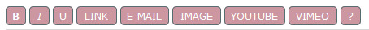
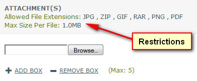

Documentation -


Documentation -

COMMERCIAL VERSION INCLUDES: - FREE upgrades for life - One time payment, NO subscriptions - ALL features unlocked and unlimited
Overview
Enables visitor to view dispute ticket when dispute ticket icon is clicked for any dispute ticket.
Dispute Ticket & Details
The original dispute ticket information is show at the top of the screen. User submitted details are displayed in the right hand menu next to the dispute ticket text.
Users in Dispute
The users who are in this dispute are shown above the user details. The first name is the name of the original ticket starter.
Add Reply & Re-Open Dispute Ticket
Add a new reply if required.
BBCode Text Formatting
BB Code is a collection of formatting tags that are used to change the look of text. BB Code is based on a similar principal to HTML and allows
visitors to safely format text without danger of upsetting any of the system layout via certain html tags. If enabled, most popular tags are shown as buttons. Clicking the ? button
shows more tags and information.

Note that BBCode is not parsed in email templates.
Custom Fields
Custom data may be requested by admin. This may be in the form of text options or checkboxes and may also be required.
Attachments
Attachments may be enabled with dispute ticket replies via admin. Restrictions may also be imposed on file size and file types. Note that the free version
allows only a single attachment with each dispute ticket and/or reply. If multiple attachments are available, boxes can be added/removed via the links provided:

Close Dispute Ticket After Response
Check box to close dispute ticket after reply is made. This generally confirms that the visitor requires no more action from admin.